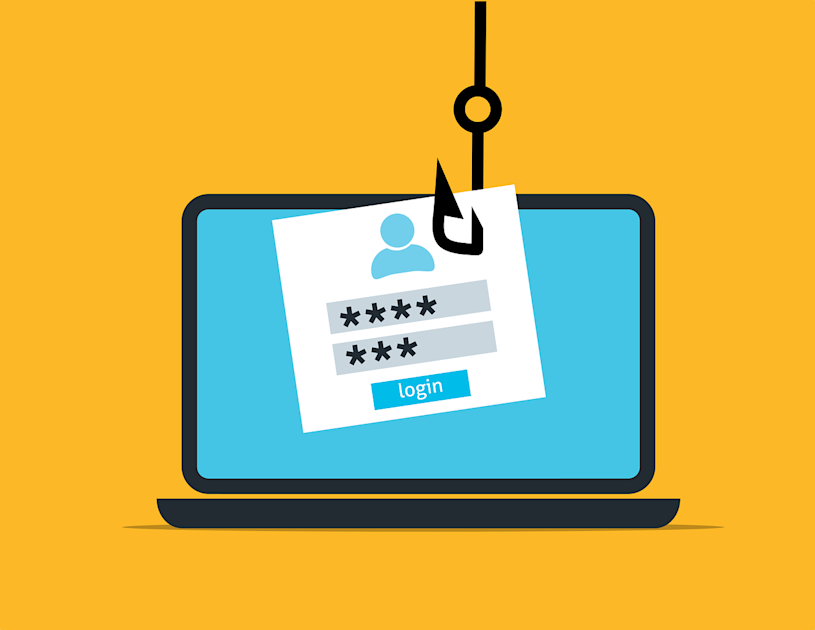

¿Qué es el phishing y cómo reconocerlo?
Phishing
El phishing no es solo un correo falso, es una de las técnicas de ataque más usadas del mundo porque funciona tanto con personas con
poca experiencia como con usuarios avanzados.
Los ciberdelincuentes juegan con psicología humana, usando miedo,
urgencia o confianza para que la víctima haga clic sin pensar.
El phishing puede llegar por correo electrónico, SMS (smishing) o mensajes en redes sociales. Los atacantes fingen ser una entidad legítima
, un banco, un servicio de correo o una red social, para que hagas clic en un enlace o descargues un archivo.
Principales señales de phishing:
- Dirección del remitente extraña: el dominio puede parecer parecido al original, por ejemplo: (rnicrosoft.com, en vez de microsoft.com, intentan colartela cambiendo solo la primera letra.)
- Enlaces sospechosos: antes de clicar, pasa el ratón por encima y revisa la URL real.
- Urgencia o amenazas: mensajes que dicen “tu cuenta será cerrada” o “paga ahora” para forzar una reacción rápida.
- Errores ortográficos o formato pobre: muchas campañas automatizadas no cuidan el idioma.
Que hacer si recibes un mensaje sospechoso?
No hagas clic en enlaces ni descargues archivos.
Verifica el remitente comparando el dominio oficial (abre el sitio oficial manualmente).
Activa autenticación multifactor (MFA) en tus cuentas importantes.
Cambia la contraseña si pensaste que tu cuenta pudo verse comprometida.
Reporta el correo al servicio legítimo (p. ej. soporte del banco) o usa las opciones de denuncia de la plataforma.
En conclusión
El phishing se combate con precaución y hábitos sencillos: revisar remitentes, comprobar URLs y usar MFA. Unos segundos de atención pueden evitar un problema grande.
